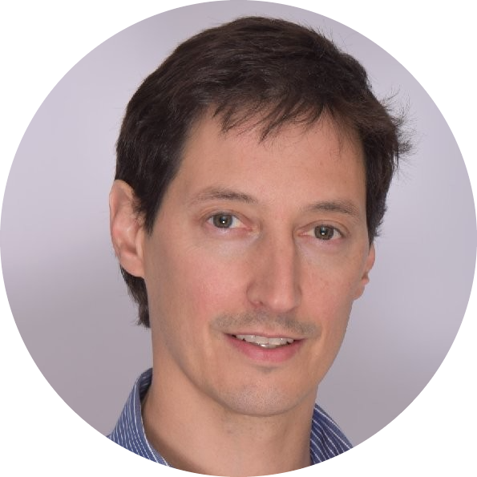

|  |
Ignacio LarrainCEO of MACH Highly motivated and collaborative leader with strong interpersonal and analytical skills. Experienced in building strong and high performance teams, with passion for value creation, results orientation and solid integrity. 18 years of experience in financial services, and currently leading one of the fastest growing fintechs in Latin America in an extremely dynamic and competitive landscape. |
University of Pennsylvania, USA
The Wharton School - Executive Education
Advanced Management Program, November 2018
University of California, Berkeley
Walter A. Haas School of Business
Master of Business Administration, May 2010
Graduated with Honors
TA – Macroeconomics; Financial Accounting; Managerial Accounting
Pontificia Universidad Católica de Chile, Chile
Industrial Engineering Diploma in Mechanical Engineering
Master of Business Administration, May 2010
TA – Marketing; Marketing for Tech Companies
Study Abroad Program – UC Berkeley, 2nd Semester 2003
| 2019 – to date | CEO |
|
|
| 2015 – 2019 | Head of Contact Center |
| Excel | ⭐⭐⭐⭐ | Python | ⭐⭐⭐ |
| Negotiation | ⭐⭐⭐⭐⭐ | Building Teams | ⭐⭐⭐⭐⭐ |